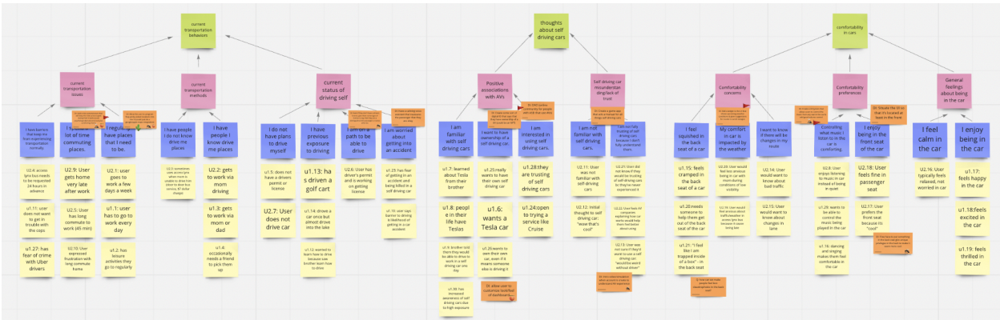
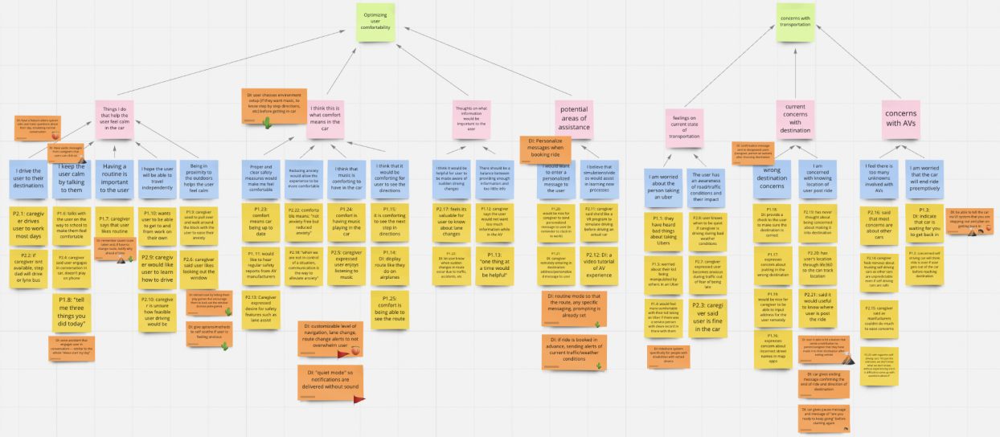
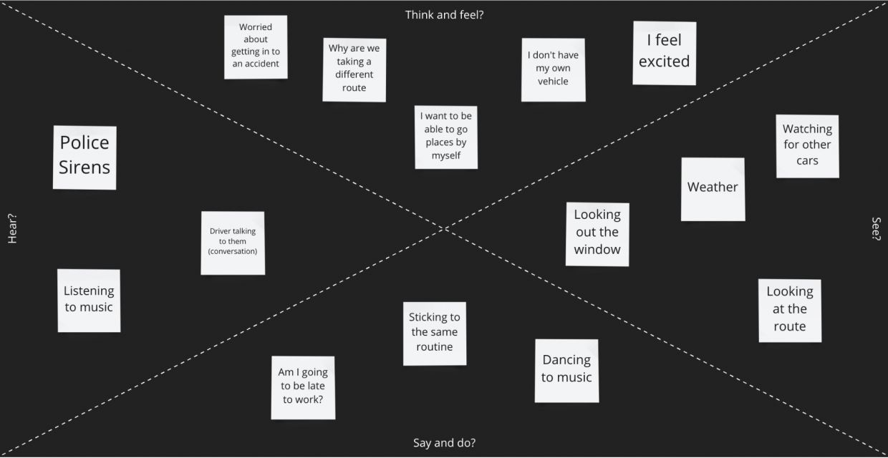
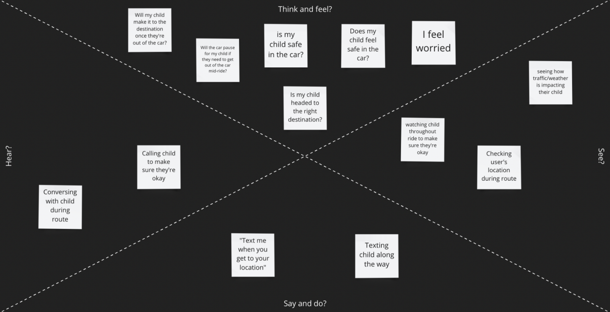

Background Research
Problem
The largest barrier to independence for People with Autism Spectrum Disorder (ASD) is transportation. Public transportation is an activity that is often anxiety inducing as well as limited in certain parts of the US. Additionally, learning to drive and operating a vehicle comes with its own set of challenges for this population.
Literature Review
We started our project with a literature review to understand the project space we had chosen and find any solutions already designed. During our preliminary research efforts, we identified two key studies that address the opportunities for people with ASD to use autonomous vehicles.
Study One: Requirements to operate vehicle
This study details the requirements that individuals with ASD need to operate a vehicle with baseline functioning abilities to be an active passenger in an AV include focussing on the road, adapting to changing road conditions, identifying hazards, predicting the actions of others, and adequately perceiving visual and auditory information.
Study Two: Autonomous Vehicle Focus Group
This study provides findings from a focus group of individuals with ASD that rode in an autonomous vehicle. The participants indicated that they were initially nervous but also excited to ride in the car. During the ride, they appreciated that the car was very quiet and enjoyed the large size of the windows for added visibility. Most participants also indicated that they would want to ride in an AV again, but several said that they would feel most comfortable if someone else was in the car with them.
Target Users
From our literature review, we found the following primary user and stakeholders for our project that we wanted to understand more about within this experience.
Primary User
- People with ASD
Secondary User
- Guardians and caregivers of individuals with ASD
Stakeholders
- Autonomous vehicle companies
- Employers wanting to hire individuals with ASD
Data Collection
After identifying our target users and gaining background information on the topic, we conducted two data collection methodologies to gather insights on the pain points of our users when using AVs.
|
Surveys - Goals - Learn about user's transportation habits and attitudes on autonomous vehicles - Find forms of transportation used and what they considered comfortable or uncomfortable about each respective form - Current feelings and potential concerns were in regard to self-driving car - Method Details - Created two surveys on Qualtrics - one for people with ASD and another for their parent/caregiver - Sent surveys out to different Autism groups around Atlanta as well as in reddit forums Semi-structured Interviews - Goals - Learn about day to day routine, transportation behaviors, and car riding attitudes - Gain a deeper understanding of their pain points when riding in the car - Identify their potential concerns regarding self-driving cars - Method Details - Zoom call with two people with ASD and their parents - Zoom call with a behavior analyst and an employee at Cruise, a company working on creating a self-driving car service |
Analysis
Affinity Maps
Based on the insights gained from the data collection phase, we created two affinity maps for our primary and secondary users and organized our notes into categories with both.
Person with ASD Affinity Map
Caregiver Affinity Map
Walking the Wall
After completing both affinity maps, we "walked the wall" and placed six assigned emojis on design ideas that we liked. We also included the cactus emoji once we noticed that some design ideas were repeated between the two maps as a way to highlight the themes and pain points that stuck out for both the person with ASD and the caregiver, as well as, with multiple people on our team. When we finished walking the wall, we discussed the sticky notes with the emojis on them, which helped inform our empathy maps, user needs and design implications and summarize our main research findings.
Empathy maps
We utalized empathy maps to understand how our target users would be feeling across multiple senses throughout the experience.
Person with ASD Empathy Map
Caregiver Empathy Map
|
Research Findings - Problems with Current Transportation Methods - Issues getting driver's license/practicing driving - Barriers with using public transportation - Current Attitudes on AVs - Concerns with putting in correct destination - Potential for users to be overwhelmed by stimuli - Excitement for independence - Preferences in Comfortability - Music - Conversations about day to day routines - Information about the journey |
Design themes and Core Functionality
Design Themes |
Core functionality |
User needs a way to calm down or have a distraction from anxiety induced by being in a car/AV |
- In car entertainment - Conversation Questions - Games - Music |
User wants a sense of ownership |
- Personalized data in the display system - Welcoming user by name |
Primary User likes to follow a set routine |
- Customize the type of information to receive - Programming frequently visited locations - Alerting to reason for lane change - Alerting to changed due to weather |
Secondary User would like a way to know user chose the correct route or made it to their destination |
- Communication system with caregivers |
Prototyping and Design
Sketches
From our research, we came up with two possible design ideas: a communication simulator and an information customization assistant. We started with creating sketches of each idea on a whiteboard before transferring the prototypes into balsamic.

Sketch Feedback Sessions
We then held two 40 minute feedback sessions with two people with ASD and their caregivers where we showed them our balsamic designs and asked them to perform certain tasks. We wanted to evaluate which parts of our designs were helpful for people with ASD, specifically which parts would make them feel comfortable while riding in the AVs. Additionally, we wanted to find which parts of our designs the caregivers believed would be the most beneficial to the riders and if they could identify any missing aspects that could be added.
Sketch Findings
|
Communication Simulator - Caregiver is concerned about how the system would handle the user providing negative responses in the conversation. - Being able to customize each aspect of the experience will account for users of varying cognitive abilities and changing preferences. - Questions that allow for repetition and routine are good for people with ASD. - Voice assistance is desirable because it can remind the user to complete daily tasks. - Frustration with voice assistance happens when the computer does not understand what is being said. - There is a desire to hear the voice of celebrities or characters in addition to that of the caregiver. - The amount of desired conversation varies from person to person. - It is good to ask questions about events throughout their day and the coming days. - Playing music and listening to a voice simultaneously can feel overstimulating. - The user wants to engage with questions about their interests. |
|
Information Customization Assistant - Caregivers and users have different preferences for which notifications should be turned on. - The user would rather interact with the vehicle's dashboard interface than their phone. - The user wants a balance between visuals and audio for the notifications. |
Wireframes
Based on the feedback and findings from our sketches, we created updated wireframes in Figma for the car dashboard and companion app to address both the rider experience and the caregiver experience.
Wireframe One: Rider Experience in Companion App
Wireframe Two: Caregiver Experience in Companion App
Wireframe Three: Communication Simulator/Information Customization Dashboard UI
Wireframe Feedback Sessions
We conducted feedback sessions with the same participants from our previous feedback session and found the following insights:
- It would be beneficial for individuals to be able to access help for any errors that occur along the way.
- Maps provide comfort to the user.
- Customization is important.
- Split screen view on dashboard can be overwhelming.
- Importance of Caregiver Experience.
- Decrease number of steps to complete actions.
- Diminished need for rider app.
- Users like routine.
Final design
Based on feedback from our wireframes, we created an updated high-fidelity design in Figma. We then conducted more feedback sessions using two expert evaluation methods and one user evaluation method.
Findings
|
Expert Evaluation Method #1: Cognitive Walkthrough - We worked with an expert with knowledge of both UX design and ASD to give us feedback on the parts of our interface that would help and hurt the users' experiences using our product. - Finding: Add color and icons instead of soley relying on literacy. |
|
Expert Evaluation Method #2- Heuristic Evaluations -Our goal in conducting our heuristic evaluations with experts was to assess our prototype based on whether it utilizes good UX design principles. We conducted this method with a UX Research professor and a UX master's studen. - Finding: Remove transpriction because of conflicting speech and text. - Finding: Make the virtual assistance an avatar instead of an actual person. |
|
User Evaluation Method: Usability Testing -Our usability testing was split into two parts. The first was a task-based assessment in which users were sent the prototype and asked to complete a list of tasks while thinking aloud. Then, a semi-structured interview was conducted to gain more high-level insights regarding the entire experience. We conducted this method with two people with ASD and their caregivers. - Finding: Streamline user answer recording experience. - Finding: Change the wording on the "pause chat" and "settings" buttons. |
Design Walkthrough
Future Iterations

- Make usability tests changes
-Customize voice assistant based on preferences (voice and gender)
- Keeping in mind that ASD is a spectrum, providing more customization across experience is necessary to account for the user group needs